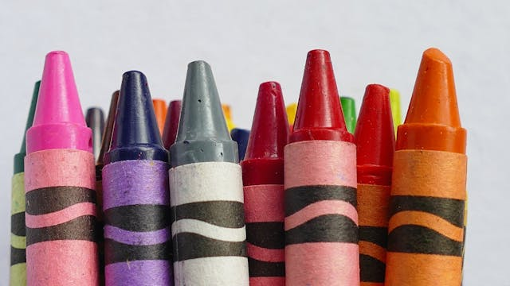

There are many children who go hungry all over the world. At Sam's this is unacceptable. We do not allow babies to walk with growling bellies. Check out our menu and choose your favorite color so we can bring your food on a special colored plate!
Make Sure you grab a coloring book and your crayon set to show off your art skills while we cook
Feeding Our Babies 